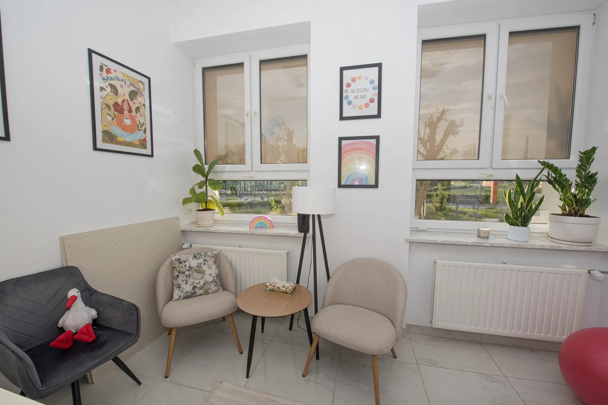

Psychologia
Konsultacje psychologiczne, terapia indywidualna dzieci i młodzieży oraz wsparcie dla rodziców. Pomoc przy zaburzeniach lękowych, depresyjnych, ADHD i spektrum autyzmu.
Dowiedz się więcej →Holistyczne wsparcie terapeutyczne dla dzieci, dorosłych i seniorów. Psychologia, neurologopedia i fizjoterapia pod jednym dachem.
„Człowiek musi z kimś czuć, z kimś myśleć, z kimś rozmawiać, aby wiedział, że istnieje".
Wiesław Myśliwski

Gabinet powstał w trosce o potrzeby pacjentów małych, dorosłych i starszych – w odpowiedzi na chęć współpracy wykwalifikowanych specjalistów z wieloletnim doświadczeniem.
Łączymy wieloletnie doświadczenie praktyczne z zakresu diagnozy i terapii psychologicznej, neurologopedycznej oraz fizjoterapii. Zależy nam przede wszystkim na holistycznym i interdyscyplinarnym podejściu do Pacjenta – traktując go jako spójną całość, nie jedynie zbiór objawów.
Oferujemy wsparcie w zakresie czynności profilaktycznych i rehabilitacyjnych z obszaru nieprawidłowości motorycznych, poznawczo-językowych i mowy. Nasz gabinet wyposażony jest w niezbędne pomoce dydaktyczne i specjalistyczny sprzęt terapeutyczny.
Nasz gabinet przyjmuje pacjentów od najmłodszych lat aż po wiek senioralny. Każdy etap życia niesie inne potrzeby. Jesteśmy tu, by na nie odpowiedzieć.
Terapia psychologiczna, logopedyczna i integracja sensoryczna dla dzieci z zaburzeniami rozwojowymi, emocjonalnymi, spektrum autyzmu, ADHD oraz trudnościami szkolnymi.
Sprawdź ofertęWsparcie psychologiczne, terapia czaszkowo-krzyżowa i praca z głosem dla osób przeżywających stres, lęk, traumy, trudności komunikacyjne lub problemy mięśniowo-powięziowe.
Sprawdź ofertęWsparcie gerontologiczne, terapia języka po udarze i innych incydentach neurologicznych, podtrzymanie komunikacji przy otępieniu oraz praca z ciałem w ujęciu czaszkowo-krzyżowym.
Sprawdź ofertęKompleksowa opieka terapeutyczna dopasowana do potrzeb każdego pacjenta.
Konsultacje psychologiczne, terapia indywidualna dzieci i młodzieży oraz wsparcie dla rodziców. Pomoc przy zaburzeniach lękowych, depresyjnych, ADHD i spektrum autyzmu.
Dowiedz się więcej →Diagnoza i terapia zaburzeń mowy, języka i komunikacji u dzieci i dorosłych. Terapia dysfunkcji artykulacyjnych, fonacyjnych i oddechowych. Kształcenie głosu.
Dowiedz się więcej →Terapia czaszkowo-krzyżowa metodą Upledgera dla dzieci i dorosłych. Integracja sensoryczna. Holistyczne podejście łączące pracę z ciałem i emocjami.
Dowiedz się więcej →Interdyscyplinarny zespół terapeutyczny łączący psychologię, neurologopedię i fizjoterapię.
Psycholog
Dyplomowany psycholog, specjalność kliniczno-sądowa. Pracuje terapeutycznie z dziećmi i młodzieżą z problemami emocjonalnymi, rozwojowymi i neurologicznymi.
Fizjoterapeuta
Terapeuta Integracji Sensorycznej i terapii czaszkowo-krzyżowej metodą Upledgera. Pracuje z dziećmi z zaburzeniami rozwojowymi oraz z dorosłymi.
Logopeda · Neurologopeda
Doktor nauk humanistycznych, neurologopeda, trener głosu i mowy. Doświadczenie w pracy z dziećmi, dorosłymi i seniorami. Wykładowca akademicki.
Odpowiedzi na pytania, które słyszymy najczęściej. Nie znalazłeś tego, czego szukasz? Skontaktuj się z nami.
Wizyty umawiamy i odwołujemy wyłącznie przez SMS na numery poszczególnych terapeutów:
Nie przyjmujemy rezerwacji telefonicznych ani mailowych. Z góry dziękujemy za dostosowanie się do tych wytycznych.
Gabinet przyjmuje pacjentów w każdym wieku – od niemowląt i małych dzieci, przez młodzież i dorosłych, aż po seniorów. Specjalizujemy się m.in. w zaburzeniach rozwojowych, spektrum autyzmu, ADHD, trudnościach komunikacyjnych, zaburzeniach po incydentach neurologicznych oraz wsparciu gerontologicznym.
Pierwsza wizyta ma charakter konsultacyjny. Obejmuje szczegółowy wywiad z pacjentem lub rodzicem/opiekunem, analizę zgłaszanego problemu oraz wskazówki dotyczące dalszego postępowania. Psycholog proponuje odpowiednie metody terapeutyczne i wspólnie z rodziną ustala plan wsparcia.
Konsultacja to pierwsze spotkanie diagnostyczne – terapeuta zbiera wywiad, analizuje zgłaszany problem i proponuje plan dalszego działania. Od konsultacji zaczynają wszyscy nowi pacjenci.
Terapia to regularny cykl spotkań, podczas których pracuje się nad konkretnymi celami – dostosowanymi do wieku, potrzeb i możliwości pacjenta.
Standardowa sesja terapeutyczna trwa około 50–60 minut. Pierwsza konsultacja może trwać nieco dłużej ze względu na konieczność przeprowadzenia szczegółowego wywiadu.
Neurologopeda prowadzi terapię mowy i języka dla dzieci, dorosłych i seniorów. Zakres obejmuje m.in.:
Integracja Sensoryczna (IS) to terapia skierowana do dzieci z zaburzeniami przetwarzania sensorycznego – czyli takich, które mają trudności z właściwym odbieraniem i interpretowaniem bodźców zmysłowych (dotyk, ruch, równowaga, dźwięk, wzrok). Terapia odbywa się w formie specjalnie dobranych ćwiczeń, które wyglądają jak zabawa, a w istocie stymulują prawidłową integrację układu nerwowego.
Terapia Cranio-Sacralna Upledgera to metoda terapii manualnej opierająca się na bardzo delikatnym dotyku. Terapeuta pracuje m.in. z powięzią, kośćmi czaszki, oponą mózgową, rdzeniem kręgowym i płynem mózgowo-rdzeniowym. Poprzez rozluźnienie struktur łączno-tkankowych redukuje napięcia powodujące problemy zarówno somatyczne, jak i emocjonalne.
Metoda wspiera naturalne mechanizmy samouzdrawiania organizmu i może być stosowana niezależnie od wieku. Stosuje się ją m.in. przy traumach, trudnych doświadczeniach, lęku, depresji i bezsenności – w podejściu zwanym Uwolnieniem SomatoEmocjonalnym.
Tak. Budynek Przychodni Chemar, w której mieści się gabinet, wyposażony jest w podjazd i windę, co zapewnia dostęp osobom poruszającym się na wózku inwalidzkim lub z ograniczoną mobilnością.
Gabinet mieści się w budynku Przychodni Chemar przy ul. Karola Olszewskiego 6 w Kielcach (I piętro, pokój 116). Szczegółowe informacje o dojezdzie samochodem, komunikacją miejską oraz parkingiem znajdziesz na stronie Lokalizacja.
Umawianie i odwoływanie wizyt wyłącznie przez SMS. Serdecznie zapraszamy pacjentów w każdym wieku.